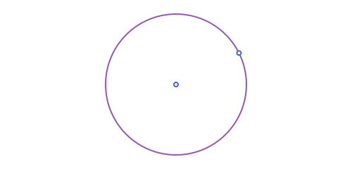

Circles: Basics
APCircle2 is a center and a radius, c.center and c.r. Some of what follows is a method on a circle (area, rotate, ...); the rest (tangency, power of a point, radical axes, inversion) is a function of one or more circles.
A point on the circumference works instead of the radius, when that's the more natural thing on hand: APCircle2(center, through) is exactly APCircle2(center, distance(center, through)):
using Apollonius
APCircle2(APPoint(0.0, 0.0), APPoint(3.0, 4.0)) # radius 5, same as APCircle2(APPoint(0.0, 0.0), 5.0)APCircle2([0.0, 0.0], 5.0)
Three points on the circumference work too: APCircle2(p1, p2, p3) is their circumcircle, computed directly (the same formula circumcenter uses on an APTriangle, without needing to build one first):
APCircle2(APPoint(0.0, 0.0), APPoint(4.0, 0.0), APPoint(0.0, 3.0))APCircle2([2.0, 1.5], 2.5)
A diameter works too. circle_with_diameter takes the two ends, or the segment itself, and builds the circle centered at its midpoint. By Thales' theorem, every other point of the circle sees the segment under a right angle:
d = APSegment(APPoint(0.0, 0.0), APPoint(6.0, 2.0))
c_d = circle_with_diameter(d)
c_d == circle_with_diameter(d.p1, d.p2), c_d.center, c_d.r(true, [3.0, 1.0], 3.1622776601683795)p_d = point_on(c_d, 1.0)
angle_measure_at(p_d, d.p1, d.p2) ≈ pi / 2true
It throws an ArgumentError if the three points are (or are too close to) collinear, same as affine_map does for its three source points. There's no finite circle through them in that case.
antipode(p, c) is the point of c diametrically opposite p: c.center is the midpoint of p and its antipode, which is just reflection(p, c.center) under the hood.
c0 = APCircle2(APPoint(0.0, 0.0), 5.0)
antipode(APPoint(5.0, 0.0), c0) # [-5.0, 0.0], on the far side of c0.center[-5.0, 0.0]Power of a point and tangent lines
The power_of_point of p with respect to a circle c is distance(p, c.center)^2 - c.r^2: negative inside the circle, zero on it, positive outside. Its square root, when p is outside, is exactly the length of a tangent segment from p to the circle. That's tangent_length. tangent_points and tangent_lines give the two actual points/lines of tangency.
using Apollonius
c = APCircle2(APPoint(0.0, 0.0), 5.0)
p = APPoint(13.0, 0.0)
power_of_point(p, c) # 144.0 = 13² - 5²
tangent_length(c, p) # 12.0 = sqrt(144)
pts = tangent_points(c, p)2-element Vector{APPoint{2, Float64}}:
[1.9230769230769234, 4.615384615384615]
[1.9230769230769234, -4.615384615384615]
This is the classic tangent from an external point construction: pts[1] and pts[2] are the two points where a line through p just touches the circle, and power_of_point(p, c) is nothing but the square of that tangent length either way.
Radical axis, radical center and radical circle
Two circles that don't share a center have a radical axis: the locus of points whose power is equal with respect to both. radical_axis always exists (even for circles that don't meet) and is perpendicular to the line joining their centers. "Don't share a center" is checked with a scale-aware tolerance (atol, like elsewhere in the package), not bare equality: two circles can be mathematically concentric yet have centers that only agree up to floating-point roundoff (this comes up for, e.g., orthic_axis of an equilateral triangle, whose circumcircle and nine-point circle are concentric), and a bare == would miss that and return a wildly wrong axis instead of throwing. Three circles have three pairwise radical axes, and those three lines always meet at a single point, the radical_center; radical_circle is centered there, orthogonal to all three (only defined when that common power is non-negative).
c1 = APCircle2(APPoint(0.0, 0.0), 3.0)
c2 = APCircle2(APPoint(8.0, 0.0), 2.0)
c3 = APCircle2(APPoint(3.0, 6.0), 4.0)
ra = radical_axis(c1, c2)
rc = radical_center(c1, c2, c3)
rcirc = radical_circle(c1, c2, c3)APCircle2([4.3125, 1.010416666666666], 3.258619046510005)
radical_circle is itself one instance of a more general idea: orthogonal_circle builds a circle orthogonal to a given one, either centered at a chosen point outside it, or passing through two chosen points. Two circles are orthogonal when the tangent lines at either of their crossing points are perpendicular, equivalently when distance(c1.center, c2.center)^2 == c1.r^2 + c2.r^2:
oc1 = orthogonal_circle(c1, APPoint(13.0, 0.0)) # centered at that point, radius = tangent length
distance(c1.center, oc1.center)^2 ≈ c1.r^2 + oc1.r^2trueoc2 = orthogonal_circle(c1, APPoint(8.0, 3.0), APPoint(-4.0, 6.0)) # through both points instead
distance(c1.center, oc2.center)^2 ≈ c1.r^2 + oc2.r^2trueThe two-point form builds on the classical inversive-geometry fact that the circle through p1, p2 and the invert of p1 in c1 is orthogonal to c1. It throws an ArgumentError for the two configurations that fact can't resolve on its own (p1/p2 sitting exactly on c1, or forming an exact inverse pair): those have genuine solutions too, just not from this one construction.